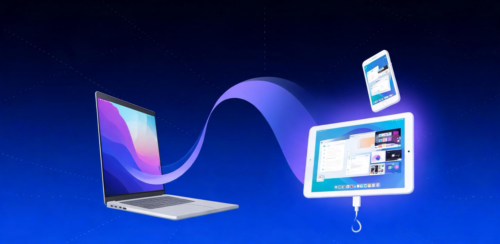

1
在 Mac 上运行Run it on your Mac
启动 SecondScreen，菜单栏出现图标，应用会自动创建一个系统级虚拟显示器，并显示配对地址。Launch SecondScreen. A menu-bar icon appears, the app creates a system-level virtual display, and shows a pairing address.
在 Mac 上运行 SecondScreen，用同一局域网的任意手机或平板打开浏览器，立刻获得一块真正的扩展副屏。副屏上不需要安装任何软件，也不用注册账号。 Run SecondScreen on your Mac, then open a browser on any phone or tablet on the same network. You get a real extended display — with nothing to install on the second device, and no account.

不需要数据线，不需要在副屏上安装任何东西，也不需要注册。No cable required, nothing to install on the second device, no sign-up.
启动 SecondScreen，菜单栏出现图标，应用会自动创建一个系统级虚拟显示器，并显示配对地址。Launch SecondScreen. A menu-bar icon appears, the app creates a system-level virtual display, and shows a pairing address.
在手机或平板浏览器输入面板上显示的局域网地址，无线连接即刻建立。Type the LAN address shown in the panel into the browser on your phone or tablet — the link is established instantly.
http://192.168.x.x:8080系统把它当作真实显示器：扩展桌面、全屏播放、多任务窗口，全部照常使用。macOS treats it as a real display: extend your desktop, go full-screen, run multi-window — everything works as usual.
用数据线连接安卓设备，在 SecondScreen 菜单里选择「使用数据线」，应用会自动完成端口转发。副屏浏览器打开 localhost 地址即可 —— 画面走线缆而不是 Wi-Fi，不受无线抖动影响，同时顺带给设备充电。适合游戏、实时预览、会议演示等对延迟敏感的场景。 Connect an Android device over USB and choose “Use a cable” from the SecondScreen menu — the app sets up the port forwarding for you. Open the localhost address in the browser and frames travel over the cable instead of Wi-Fi: immune to wireless jitter, and your device charges while it works. Ideal for gaming, live preview, and presentations.
adb reverse tcp:8080 tcp:8080 adb reverse tcp:8081 tcp:8081
需要设备已开启「开发者选项 → USB 调试」，且 Mac 上可找到 adb。Requires USB debugging enabled on the device and adb available on the Mac.
无需线缆，副屏设备放哪都行。只要与 Mac 处在同一局域网即可，建议使用稳定的 5 GHz Wi-Fi。No cable, and the device can sit anywhere. All it needs is a shared local network with your Mac — a stable 5 GHz Wi-Fi is recommended.
画面完全不走网络，延迟极低且稳定，不受路由器负载与信号干扰影响；设备在使用的过程中同时充电。Frames never touch the network: latency is minimal and consistent, unaffected by router load or signal interference — and the device charges while in use.
它由 macOS 识别为系统显示器，因此扩展桌面、全屏、多任务的行为与普通外接屏完全一致。macOS recognises it as a system display, so extending, going full-screen and multitasking behave exactly like a physical monitor.
通过系统虚拟显示器接口创建，最高 2960×1848 HiDPI，是把桌面延伸出去，而不是把画面镜像一遍。Created through the system virtual-display interface up to 2960×1848 HiDPI. Your desktop is extended, not just mirrored.
VideoToolbox 硬件编码，浏览器侧用 WebCodecs 硬解并由 WebGL 上屏，稳定 60 fps、低占用。Encoded in hardware by VideoToolbox, decoded in the browser with WebCodecs and rendered via WebGL — steady 60 fps at low cost.
只要浏览器支持 WebCodecs：安卓平板、iPad、旧手机都行，Chrome、Edge、Samsung Internet 均可。Any browser with WebCodecs support: Android tablets, iPads, older phones — Chrome, Edge or Samsung Internet all work.
可添加到主屏幕作为 PWA 全屏运行，并保持屏幕常亮，副屏放一边就能一直当显示器用。Add it to the home screen as a PWA, run it full-screen, and keep the screen awake — leave it beside you and it stays a monitor.
合盖唤醒、设备休眠、短暂断线后自动恢复推流，无需重新配对或刷新页面。After sleep, wake or a brief drop, streaming resumes on its own — no re-pairing, no refreshing the page.
画面只在你的局域网内点对点传输，不经过任何服务器，无第三方 SDK，也不收集任何数据。Frames travel peer-to-peer on your LAN only. No servers in between, no third-party SDKs, and no data collected.
Mac 负责创建显示器与编码，副屏浏览器只做解码和显示，因此副屏几乎不需要性能。The Mac creates the display and encodes; the second screen only decodes and paints — so it needs almost no horsepower.
Apple Silicon 与 Intel 机型均支持，需要授予「屏幕录制」权限。Apple Silicon and Intel are both supported. Screen Recording permission is required.
Android 平板 / 手机、iPad、iPhone 均可，无需安装任何应用。Android tablets and phones, iPads and iPhones — nothing to install.
仅在需要最低延迟时使用；需要设备已开启 USB 调试。Only if you want the lowest latency; requires USB debugging enabled on the device.
免费下载，无需注册。安装包体积小，不包含任何第三方追踪代码。Free to download, no account needed. A small installer with no third-party tracking.
打开 DMG，把 SecondScreen 拖入应用程序文件夹。Open the DMG and drag SecondScreen into your Applications folder.
首次启动请右键点击图标并选择「打开」，即可通过系统校验。On first launch, right-click the icon and choose Open to pass Gatekeeper.
在系统设置里允许「屏幕录制」，随后即可把副屏设备添加为扩展显示器。Allow Screen Recording in System Settings, then add your device as an extended display.